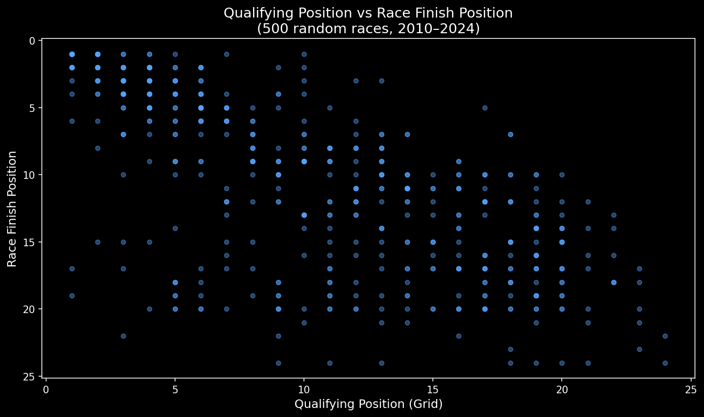
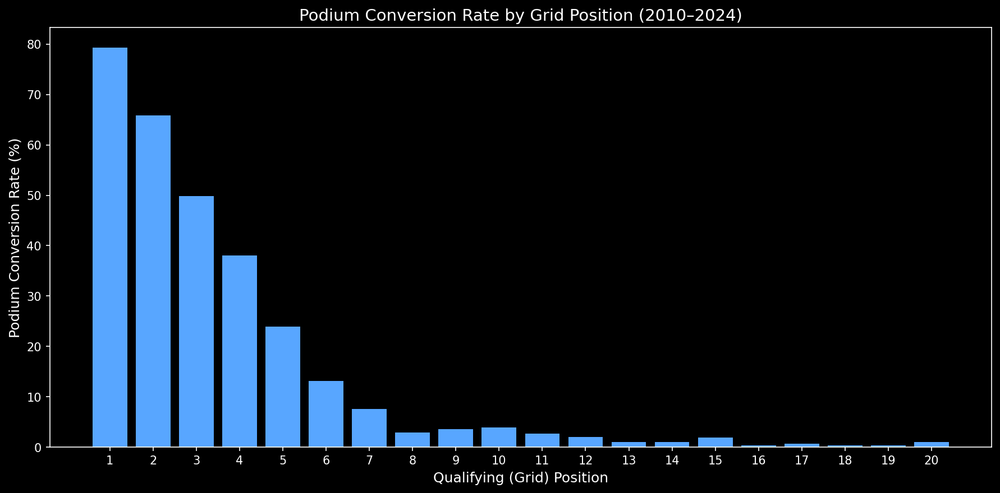
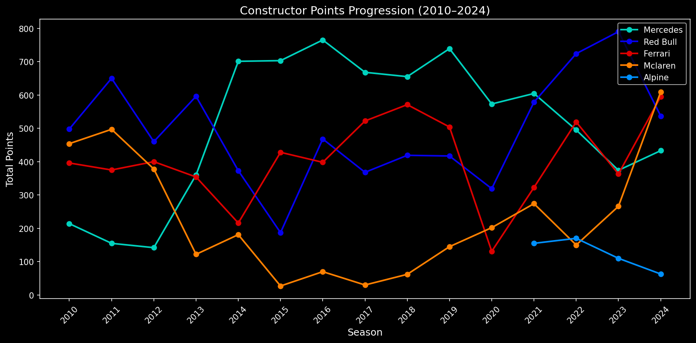
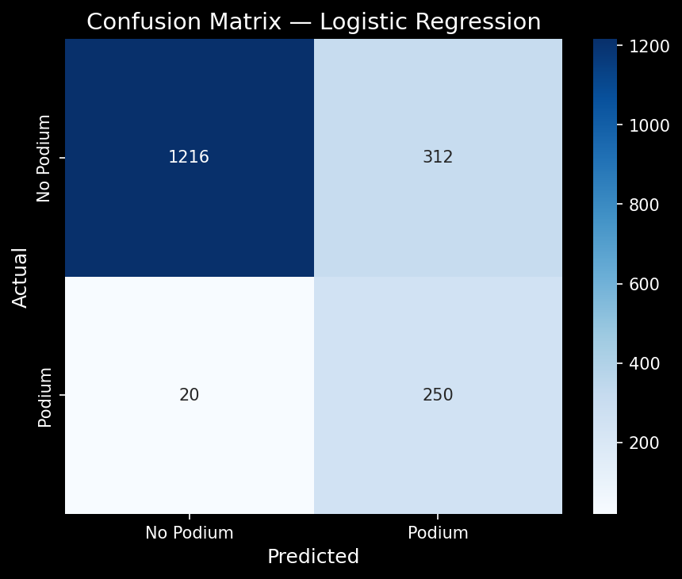
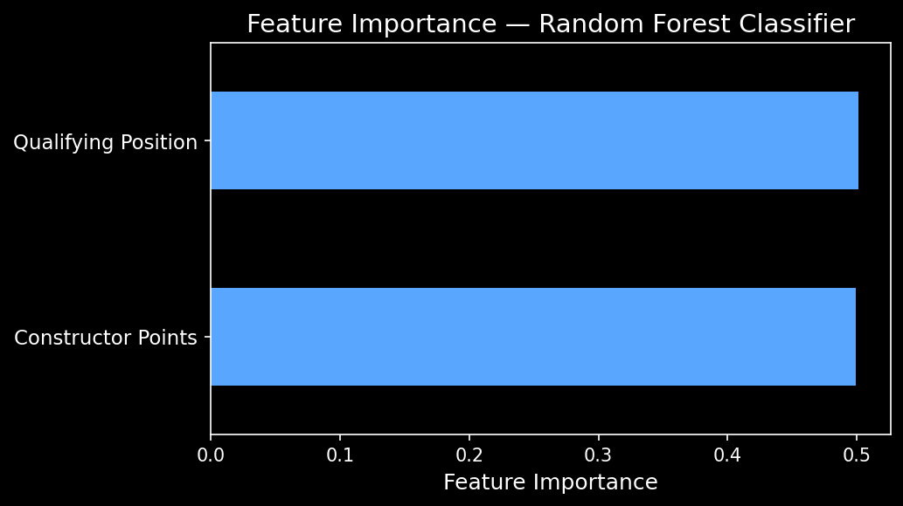

Data Science Portfolio: Project 1
Can qualifying position and constructor standings reliably predict race outcomes? A binary classification analysis across 15 seasons of F1 data (2010–2024).
Overview
A predictive analytics project using publicly available F1 race data
H₀: Qualifying position and constructor standings have no significant relationship with podium finish probability.
H₁: Qualifying position and constructor standings are statistically significant predictors of podium finish.
Race results, qualifying positions, and constructor standings extracted via REST API, a community-maintained source covering F1 from 1950 to present.
Filtered to 2010–2024 to exclude pre-hybrid dominant eras that would skew model behaviour.
Exploratory Analysis
Key charts from the analysis

Qualifying position vs race finish position (500-race sample), confirming a strong positive relationship between grid and final result.

Podium conversion rate by grid position, showing a steep decay beyond P3 with near-zero conversion rates outside the top 10.

Constructor points progression for the top 5 teams (2010–2024), illustrating dominant eras and shifting competitive balance.

Confusion matrix showing a high true positive rate and low false negative count, consistent with the 0.926 recall figure.

Feature importance rankings confirm qualifying position as the strongest predictor, followed by constructor championship points.
Model Evaluation
Performance across two binary classifiers
| Metric | Logistic Regression | Random Forest |
|---|---|---|
| Recall | 0.926 | 0.578 |
| F1 Score | 0.601 | 0.544 |
| Precision | 0.445 | 0.513 |
| Accuracy | 0.815 | 0.854 |
In a sports prediction context, missing a genuine podium finish is a more costly error than a false alarm. A recall of 0.926 means the model correctly identifies 9 in every 10 podium finishes from pre-race data alone.
Accuracy alone is misleading here: with 85.8% of results being non-podium, a naive classifier would score ~86% by predicting nothing. Recall and F1 are the meaningful criteria.
Both qualifying position and constructor standings emerge as statistically significant predictors of podium finish, supporting rejection of H₀ in favour of H₁. The feature importance chart from the Random Forest classifier confirms qualifying position as the dominant predictor.
Methodology & Ethics
Technical decisions and ethical considerations
Logistic Regression provides an interpretable baseline, appropriate for binary classification and well-suited to communicating results to non-technical stakeholders.
Random Forest captures nonlinear feature interactions that Logistic Regression cannot represent, and provides feature importance rankings as an additional interpretability layer.
Both models were trained with class_weight='balanced' to account for the 1:6 class imbalance.
Training: seasons 2010–2020, 4,610 rows, podium rate 13.99%
Test: seasons 2021–2024, 1,798 rows, podium rate 15.02%
A random split was avoided because races within the same season share competitive dynamics. A season-based split evaluates the model's ability to generalise to entirely unseen seasons, making it the more rigorous and realistic test.
Bias: The training window (2010–2020) includes sustained Mercedes dominance, risking overfitting to team-specific patterns that may not generalise.
Privacy: All data is publicly available professional sporting performance. No personal or sensitive data is included.
Fairness: The model is descriptive and predictive only, not used to make decisions about individuals.
Gradient Boosted Trees (e.g. XGBoost) would likely improve precision without sacrificing recall on this dataset.
Additional features (weather data, tyre strategy, recent driver form) would increase model expressiveness.
Extending the target from binary podium to full finishing order prediction represents a natural progression of this work.